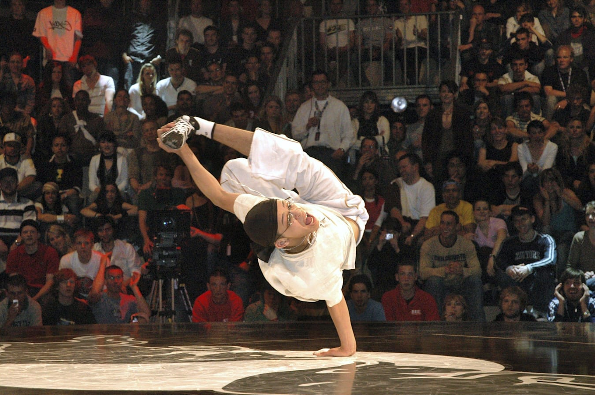
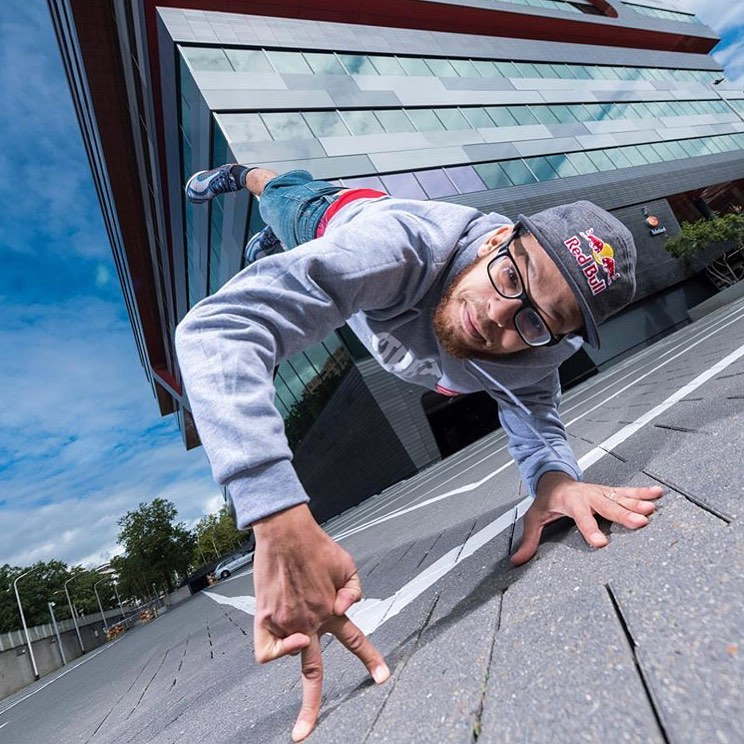
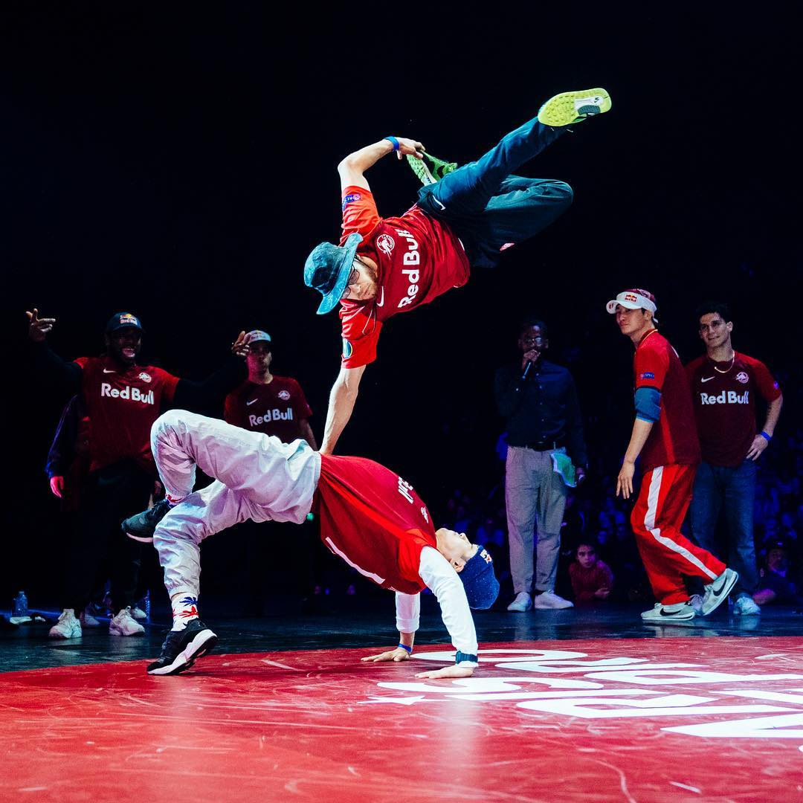
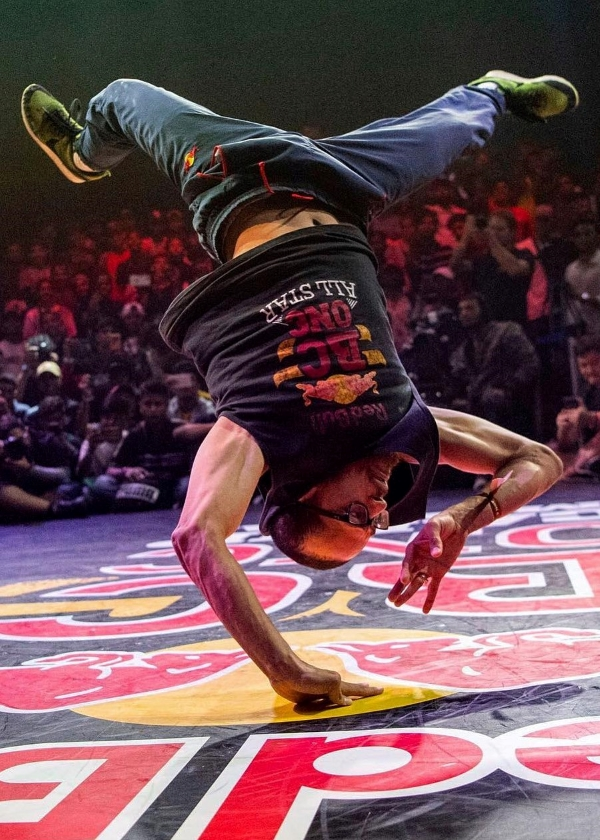
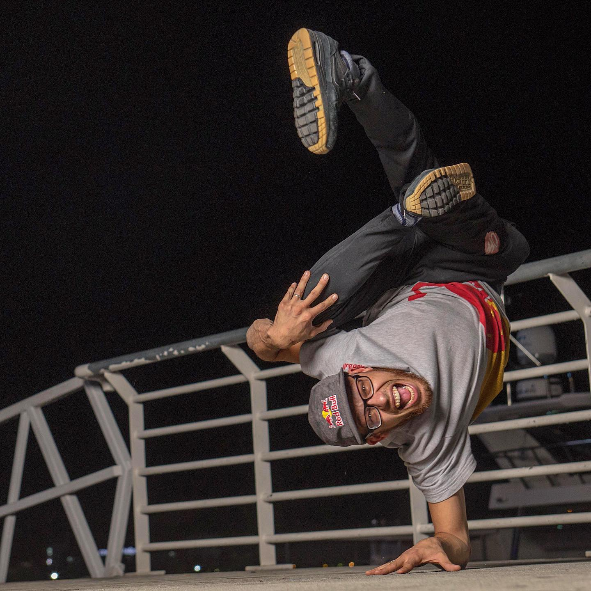
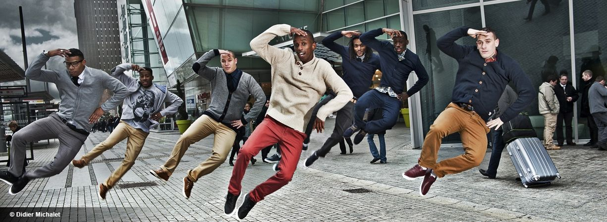

Le B-Boy franco-algérien Lilou est l’un des danseurs les plus talentueux au monde. De sa banlieue lyonnaise, Vaulx-en-Velin, au Kazakhstan, en passant par le Nigeria, la Russie, le Laos, le Koweït, le Venezuela, l’Iran ou Macao, en vingt ans de carrière – jusqu’au sommet du breakdance, discipline dans laquelle il a insufflé audace et détermination jusqu’à décrocher des titres mondiaux. C'est l’un des deux seuls B-boys à avoir été couronné 2 fois champion du Red Bull BC One (en 2005 et 2009). Multiple champion du monde de breakdance Ali Ramdani alias Lilou est un danseur sans compromis, extrêmement rigoureux et créatif sur le dancefloor mais aussi hyper populaire. Chorégraphe pour Madonna, acteur de cinéma, voyageur infatigable, du parvis de l’Opéra de Lyon à la scène du super bowl, Lilou est tout simplement une légende du hip-hop.
EN SAVOIR PLUS SUR BBOY LILOU Sa première Vitoire Bboy Lilou Legendary. Bboy Lilou




